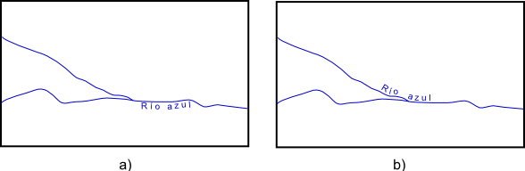
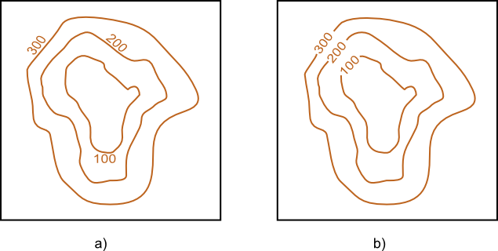
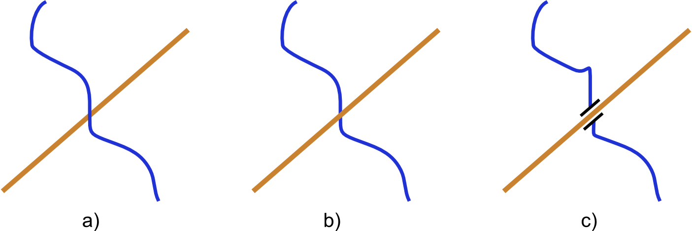
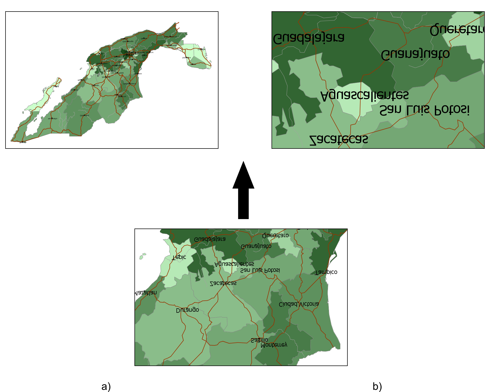

Ahora que ya conocemos la teoría del diseño cartográfico y sus ideas principales, es momento de aplicar esto a los SIG y ver en qué medida un SIG nos permite aplicar esas ideas. El objetivo de este capítulo es facilitar la aplicación de todo lo visto en los anteriores, para mejorar así nuestro trabajo con un SIG. Se trata de un capítulo eminentemente práctico en el que veremos la visualización no desde un punto de vista conceptual, sino directamente sobre el SIG, y aprenderemos cómo usar este para lograr crear mejores mapas y, en general, mejores visualizaciones de todo tipo de datos susceptibles de ser incorporados en un SIG.
Introducción
El SIG es nuestro útil para visualizar la información geográfica y, como hemos visto, un útil muy potente y con numerosas posibilidades. Conocemos ya sus capacidades y limitaciones, pero no sabemos todavía cómo debemos trabajar con estas a la hora de crear una representación visual y, sobre todo, desconocemos la forma en que las particularidades de la información geográfica dentro de un SIG afectan a su visualización.
El concepto de capa, que resulta vital para otras tareas tales como el análisis, va a tener de igual modo una influencia directa en la creación de representaciones a partir de los datos de que disponemos, ya que la interpretación de estos datos está condicionada inevitablemente al modelo de datos empleado. Por ello, veremos en este capítulo los conceptos que ya conocemos de otros anteriores, pero aplicados al caso particular de aplicarlos dentro de un SIG, empleando las herramientas que este habitualmente incluye para esa tarea.
Puesto que conocemos ya un buen conjunto de operaciones sobre los datos espaciales, y estas operaciones forman parte integrante del SIG al igual que la visualización, estudiaremos asimismo cómo aprovechar algunas de estas operaciones de cara a la visualización de información geográfica. Es aquí donde reside una de las grandes virtudes del SIG, en que sus distintas capacidades están conectadas y son accesibles desde un mismo entorno. Hacer más patente esa relación entre ellas y ampliar así las posibilidades que un mismo juego de datos ofrece para ser representado es uno de los objetivos de este capítulo.
En conjunto, las capacidades que ofrece un SIG, incluso si en muchos casos no alcanzan la funcionalidad necesaria para satisfacer al cartógrafo profesional, permiten expandir las posibilidades de representación de una capa cualquiera y obtener visualizaciones distintas a las que son habituales en un mapa clásico. Del mismo modo que una aplicación CAD amplía las posibilidades del arquitecto o ingeniero a la hora de crear planos o realizar diseños industriales, o un programa de animación abre nuevos horizontes para un dibujante, los SIG expanden las posibilidad de creación y uso de cartografía para todo aquel que requiera visualizar la información geográfica.
Cuando la información geográfica se presenta en pantalla y dentro del contexto de la aplicación SIG correspondiente, lleva asociada además una interactividad de la que un mapa impreso carece, circunstancia que también debe tenerse en cuenta. Así, junto a las ideas básicas que ya hemos desarrollado en otros puntos dentro de esta parte del libro, es necesario añadir algunas adicionales para cubrir toda la gama de posibles resultados visuales que ahora encontramos gracias a los SIG.
Además de esa representación habitual de capas que constituye la adaptación de la cartografía clásica al entorno de un SIG, otras formas de visualización que encontramos en estos son novedosas y no tienen un equivalente en aquella. Aunque su relevancia es variable, algunas de ellas representan una parte importante de las funcionalidades actuales de los SIG, por lo que las trataremos por separado para ver cómo complementan a las herramientas de visualización habituales y cómo se integran con estas.
Visualización de capas vectoriales
La visualización de capas vectoriales en el seno de un SIG es similar a la labor de la cartografía clásica, en cuanto a que los objetos que se representan son del mismo tipo, esto es, objetos geométricos en forma de puntos, líneas y polígonos. A diferencia de las capas ráster, que no tienen un equivalente en un mapa clásico (no es probable que hayas visto un mapa previo a la aparición de los SIG con un aspecto como las imágenes de, por ejemplo, la figura \ref{Fig:RepresentacionRaster}), las capas vectoriales guardan mucha similitud con los elementos que un cartógrafo clásico plasma en un mapa. Las geometrías de las capas vectoriales son los objetos básicos sobre los que el cartógrafo aplica las variables visuales según vimos en el capítulo Conceptos_basicos_visualizacion, y por tanto la manera de proceder es similar. Las herramientas que el SIG proporciona son aquellas que permiten modificar las variables visuales en función de las características asociadas a cada geometría a representar.
Un papel destacado en la visualización lo juega la tabla de atributos, ya que es la que contiene esas características que son necesarias para saber cómo representar cada objeto. El SIG provee la conexión entre los valores de los atributos y la representación visual, de forma que se interpretan aquellos para poder obtener los distintos tipos de mapas que ya conocemos del capítulo El_Mapa.
Al igual que el tipo de información es importante para escoger el tipo de mapa a crear o la variable visual a emplear para la representación, el tipo de datos ha de estar correctamente definido en la tabla de atributos para poder emplearse como tal. Es decir, ha de ser coherente con la información que recoge.
Los atributos pueden contener en ocasiones no un valor que al interpretarse se convierta en una cualidad dada de una variable visual, sino esa cualidad directamente. En el caso de capas procedentes de aplicaciones CAD, es habitual que estas contengan algún campo con el color que ha de emplearse para representar esa capa, que puede venir indicado como un código que se deberá transformar después en el color correspondiente, o bien expresado directamente como el valor RGB de dicho color.
Respecto a las geometrias, es interesante hacer ver que, aunque los objetos geométricos que se representan son del mismo tipo que los objetos con los que trabaja el cartógrafo clásico, no ha de existir siempre obligatoriamente una identificación directa entre ambos. En otras palabras, el cartógrafo puede pintar un conjunto de líneas no mediante una línea sino como un conjunto de polígonos entre líneas, tal y como sucede en el mapa de isolíneas de la figura \ref{Fig:Isolineas}. Tanto el cartógrafo clásico como su equivalente moderno que emplea un SIG parten los dos de un conjunto de líneas, pero su forma de operar es distinta.
En un mapa clásico, se trazan las líneas y después se rellena con los colores correspondientes. En el SIG, no existe la posibilidad de «rellenar», ya que únicamente pueden aplicarse las variables visuales a las entidades, y el espacio intermedio entre líneas no es ninguna entidad que tengamos almacenada en la capa. No obstante, crear esa representación resulta perfectamente posible en un SIG, aunque con un planteamiento distinto.
Puesto que queremos representar objetos de superficie, necesitamos una capa de polígonos. Obtener esta no debiera resultarnos complicado si conocemos las rutinas que vimos en la parte de procesos, que permiten convertir capas vectoriales en capas ráster, y viceversa. Podríamos, por ejemplo, rasterizar la capa de líneas, aplicar una reclasificación de sus valores para que queden en clases de la misma amplitud que la equidistancia de las isolíneas, y después vectorizar esas clases para obtener los polígonos que ya podríamos representar y colorear adecuadamente. Más adecuado es, no obstante, representar directamente la capa ráster así obtenida, sin necesidad siquiera de reclasificarla, ya que las clases las aplicaríamos en la visualización directamente. Esa es la metodología empleada para obtener la representación de la figura \ref{Fig:Isolineas}, cuyo resultado, como puede verse, es visualmente muy satisfactorio.
Conviven en la representación tanto una capa ráster como una vectorial. Lo relevante de este hecho es darse cuenta de las posibilidades que el SIG nos ofrece con sus funciones de análisis y mediante los procesos que hemos visto en una parte anterior del libro, y que pueden emplearse de igual modo para elaborar representaciones distintas. Ello aporta al SIG una flexibilidad que ha de aprovecharse cuando las capacidades de representación puramente dichas no nos ofrezcan la funcionalidad que necesitamos.
Etiquetado
El etiquetado representa una de las tareas más complejas a la hora de crear un mapa, ya sea con la ayuda de un SIG o sin ella, estimándose que puede llevar aproximadamente un 50% del tiempo total de creación de un documento cartográfico [Morrison1980Wiley]. La experiencia del buen cartógrafo queda patente en su trabajo con las etiquetas, pues es en esta labor donde más necesaria se demuestra, y en la que el criterio personal cobra una mayor importancia. Siendo así, es lógico pensar que este es asimismo uno de los procesos en los que más difícil resulta proveer una solución automatizada, ya que trasladar al ordenador ese buen hacer del cartógrafo profesional no es en absoluto sencillo. Por ello, aunque un SIG puede incorporar herramientas para ayudar en el etiquetado, una gran parte de este trabajo sigue siendo necesario realizarla manualmente, y es por esta razón que conocer algunas ideas básicas al respecto es básico si queremos elaborar cartografía de una cierta calidad, ya que el SIG por sí mismo no va a poder llevar a cabo esta tarea de forma automática.
En esta sección vamos a ver algunas ideas sobre etiquetado como parte de la visualización de capas vectoriales, ya que es en estas en las que verdaderamente tiene sentido esta labor.
La premisa fundamental del etiquetado es situar las etiquetas de tal modo que estas no se solapen y que sea inmediato asociar su nombre al objeto geográfico que designan, así como a la importancia y propiedades de este. Para ello, necesitamos tres tipos de información a extraer de esos objetos:
Dónde situar la etiqueta.
Qué poner en la etiqueta.
Cómo ponerlo.
Tratándose de capas vectoriales, toda esta información la extraeremos tanto de la geometría como de la tabla de atributos asociada. La más obvia es la relativa a qué debe ponerse en la etiqueta, que simplemente se tomará de alguno de los campos de la tabla que contenga los nombres de los distintos objetos.
Respecto a la posición, esta vendrá definida por la geometría y su georreferenciación, aunque solo parcialmente. La geometría nos da una indicación de la zona aproximada en la que debe situarse la etiqueta, ya que obviamente esta debe encontrarse a cerca del objeto al que hace referencia, pero no constituye una información suficiente, al menos para obtener un etiquetado óptimo más allá de la configuración más trivial.
Por ejemplo, en el caso de puntos cercanos, situar la etiqueta de estos centrada exactamente en cada uno de ellos hará que se solapen y oculten además a los propios puntos. Es necesario colocarlas cada una de ellas alejadas de los puntos en direcciones contrarias, para que no interfieran entre sí. La localización por tanto, no depende únicamente de las coordenadas del objeto, sino también de las de los objetos circundantes. Buscar una disposición que evite estos solapes es una tarea en apariencia simple, pero compleja desde el punto de su implementación. Aun así, está presente en los SIG en mayor o menor medida, y en el caso de puntos, los resultados que se obtienen son de una calidad aceptable. El paso a otro tipo de geometrías, donde es necesario considerar otra serie de parámetros, hace aparecer unas circunstancias más difíciles de tratar, y la labor directa del cartógrafo es mucho más necesaria.
En el caso de capas de líneas, la posición de las etiquetas debe seguir el trazado de las líneas y su orientación, existiendo, no obstante, diversas opciones en lo que respecta a la posición con respecto a la propia línea. La línea ya no es un objeto puntual y no existe por tanto una coordenada única que utilizar. El punto medio de la línea es la solución más inmediata como punto de referencia, pero no necesariamente la mejor. Pueden existir otras zonas a lo largo de la línea que resulten más relevantes y en las que sea más adecuado situar la etiqueta. En el caso de líneas muy largas, es conveniente repetir el nombre varias veces a lo largo de esta, para que no sea necesario seguirla hasta encontrar su nombre.
En el caso de líneas que se entrecruzan (calles, ríos, etc.), es importante evitar las ambigüedades. No es conveniente etiquetar una línea siempre que exista un cruce, pero un emplazamiento adecuado puede resultar suficiente para aclarar a qué línea hace referencia una etiqueta. Esto puede verse en la figura \ref{Fig:EtiquetasLineas}. En ambos casos, la etiqueta hace referencia al cauce que procede de la parte superior, que es el principal de los dos que confluyen, y por tanto también el que da nombre al segmento posterior al cruce. En el caso a), la mayor similitud en las direcciones puede inducir sin embargo a pensar que el nombre hace referencia al cauce después de la intersección y al segmento horizontal antes de esta. Si el etiquetado de este segmento horizontal, que es un cauce de nombre distinto, no se encuentra suficientemente cerca del cruce, puede entonces pensarse que la etiqueta hace referencia a él también lo cual no es adecuado. Un emplazamiento tal como el mostrado en el caso b) aclara esta situación de forma elegante.

La posición de la etiqueta sobre una línea en un cruce puede dar lugar a ambigüedades (a) o a situaciones bien definidas (b).
$$\label{Fig:EtiquetasLineas}$$
Para el caso particular de las isolíneas, se recomienda situar la etiqueta sobre la propia línea, ya que facilita su lectura, especialmente en el caso de que aparezcan varias isolíneas separadas por poca distancia, como puede verse en la figura \ref{Fig:EtiquetasIsolineas}. Además, deben situarse las etiquetas de las isolíneas contiguas de tal forma que puedan leerse conjuntamente, para que sea sencillo interpretarlas en conjunto y apreciar sin dificultad la equidistancia y la dirección en la que los valores aumentan o disminuyen.

Etiquetado de isolíneas. Deben situarse las etiquetas cercanas entre sí y sobre la línea, como en el ejemplo b)
$$\label{Fig:EtiquetasIsolineas}$$
Si la línea presenta cambios de dirección bruscos, es difícil hacer que la etiqueta siga la línea sin tener un aspecto «roto». Suavizar las líneas es una opción en este caso, al menos para usarlas como líneas base sobre las que situar las etiquetas.
En el caso de polígonos, existe igualmente el problema de seleccionar un punto para emplazar la etiqueta. El centroide del polígono es la opción más inmediata, aunque no necesariamente ha de caer dentro de este si se trata de un polígono cóncavo, e incluso en ese caso puede no resultar la mejor elección.
Como puede verse, para tomar este tipo de decisiones es necesario tener en cuenta no solo la posición del objeto y la de los circundantes, sino también «entender» qué es lo que estamos representando y qué otra información tenemos alrededor, lo cual resulta más complejo de trasladar a la aplicación SIG para que pueda hacerlo de forma automática. Tal y como comentábamos, la intervención del cartógrafo es en este caso imprescindible para incorporar este tipo de circunstancias y aportar al mapa la calidad que un mecanismo automático de etiquetado no es capaz por el momento de ofrecer.
Una vez se ha definido la posición más adecuada para las etiquetas, es necesario decidir cómo representar cada una de ellas. Algunas etiquetas son más relevantes que otras, y la claridad con la que una etiqueta transmite su información depende en gran medida de cómo esta se escribe. Los conceptos de la tipografía son de relevancia en este caso, y son a los que debemos acudir. He aquí algunos de ellos.
El uso de las variables visuales que conocemos es limitado en el caso de las etiquetas y, salvo el tamaño, no suelen emplearse para diferenciar unas de otras o darles más importancia.
El uso del tono o el valor debe llevarse a cabo con precaución. La legibilidad de la etiqueta, no obstante, está en relación con el fondo, ya que el color de este puede dificultar su lectura, y en esta situación es a veces necesario usar uno u otro tono para garantizar esa legibilidad. La etiqueta siempre está en un primer plano, por lo que el resto del mapa bajo ella y en su entorno forma parte del fondo. Como ya vimos, un adecuado contraste entre fondo y figura es importante, por lo que variar el color de una etiqueta puede a veces ser necesario para que esta pueda leerse correctamente.
Algunos elementos se etiquetan sistemáticamente con colores establecidos, como en el caso de los ríos, del mismo color azul que la propia geometría de estos.
El tamaño es la forma principal de jerarquizar las etiquetas y darles más importancia. Se puede aplicar directamente sobre el tamaño de la fuente, aunque también es posible hacerlo sobre el grosor (fuente normal o negrita).
El uso de mayúsculas o minúsculas sirve igualmente para conceder más importancia a unas u otras etiquetas.
La separación entre caracteres se puede modificar para hacer que la etiqueta cubra un espacio mayor a lo largo de un objeto lineal, eliminando en ocasiones la necesidad de un etiquetado múltiple de esta. Un espaciado mayor también aporta mayor énfasis a la etiqueta. También se puede optar por un espaciado menor en etiquetas menos importantes, o en zonas con alta densidad, para disminuir el espacio que estas ocupan y evitar solapes.
El uso de fuentes artísticas o decorativas no es recomendable. Se deben utilizar fuentes sencillas y que sean lo más legibles posible.
La información necesaria para realizar todos estos ajustes a las etiquetas debe estar contenida en la tabla de atributos de la capa. Así, podemos incluir en esta campos que indiquen el ángulo en el que se escribe la etiqueta, el tamaño a utilizar o la separación de carácter, entre otras características. Incluso la propia posición puede especificarse de esta forma. En caso de existir estos valores, el SIG los usará en lugar de aquellos que resultarían de la aplicación de los algoritmos de etiquetado automático de que disponga, entendiendo que el ajuste manual es de mejor calidad. Dado que este tipo de configuración es habitual si se desea crear un mapa de calidad, algunos SIG permiten la incorporación de capas de etiquetado, que contienen toda la información necesaria para el establecimiento de etiquetas, de forma que estas se incorporan al mapa por separado y no a partir de los objetos a los que hacen referencia y sus atributos. Esta manera de proceder, no obstante, es más laboriosa.
En resumen, la tarea de etiquetar un mapa es compleja y normalmente va a requerir una cierta cantidad de trabajo manual por parte del creador del mapa. Los SIG disponen de herramientas para automatizar una parte de este trabajo, aunque la implementación de estas herramientas es muy variada, y encontramos desde aplicaciones con poco más que un sistema trivial de etiquetado a sistemas complejos altamente configurables. En cualquier caso, incluso en el más avanzado de los programas, es muy probable que debamos llevar a cabo algún tipo de modificación o que debamos especificar manualmente algunos de los parámetros que el SIG emplea para llevar a cabo un etiquetado automático o semi--automático.
Visualización de capas ráster
Las capas ráster son, en lo que a visualización respecta, las que resultan más novedosas si las comparamos con lo que encontramos en un mapa clásico. A diferencia de las capas vectoriales, compuestas por elementos que sí aparecen en estos mapas y cuya estructura lógica se asemeja mucho a la estructura gráfica de un mapa a base de símbolos puntuales, lineales y de superficie, las capas ráster dan lugar a representaciones que no resulta tan frecuente ver en la cartografía clásica.
La cartografía clásica, especialmente la relativa a lo que denominábamos cartografía base, se encarga de recoger qué es lo que hay en una determinada porción de terreno, llevando esto a cabo mediante la representación de una serie de objetos que se corresponden con aquello que encontramos en ese terreno. Este es un enfoque mucho más acorde con el modelo de representación vectorial, y más alejado del modelo ráster. La representación gráfica de variables continuas, las cuales se aprovechan plenamente con el modelo ráster, no es objeto tradicionalmente de la cartografía, y de serlo se representan mediante geometrías simples, tales como las líneas en un mapa de isolíneas. Es decir, para el cartógrafo clásico, e independientemente del tipo de variable a representar, los datos se manejan en un modelo de representación de tipo vectorial.
Esto obedece principalmente al gran detalle que tiene una capa ráster, el cual hace inviable el uso de un planteamiento similar a la hora de crear un mapa sin la ayuda de un SIG. El cartógrafo puede trazar unas isolíneas sin dificultad para representar la topografía, pero dividir el lienzo del mapa en miles de pequeños cuadrados y colorear cada uno de un color según su elevación es por completo inviable. Más aún, disponer de los datos a representar en este caso (que constituirían un MDE), resulta también imposible si no se dispone de un ordenador para calcularlo.
Por todo ello, las capas ráster nos van a permitir crear representaciones algo distintas a las habituales en la cartografía clásica y, aunque las diferencias conceptuales con respecto a la visualización de capas vectoriales son pocas, hay algunas ideas que deben detallarse.
Formalmente, y al igual que de cara a su análisis, podemos considerar una capa ráster como una capa vectorial de polígonos (cuadrados en este caso). No obstante, e igual también que para el análisis, la regularidad de la capa ráster es el elemento clave que aporta la diferencia más importante, y en el que reside la particularidad de ese modelo de representación.
Si a cada uno de los polígonos cuadrados de los que se compone una capa ráster le asignamos un color, podemos considerar que el mapa resultante es equivalente a un mapa de coropletas, aunque con tres características peculiares: las unidades tienen un mismo tamaño todas ellas, este tamaño es normalmente muy pequeño y tiene dimensiones muy reducidas en la representación, y las unidades están situadas de forma regular en una malla. Estas características hacen que algunos de los inconvenientes de los mapas de coropletas no se presenten, y permiten un uso distinto de las variables visuales.
Por ejemplo, el uso del tono como variable ordenada, que ya vimos que en ciertos casos sí resulta adecuado, se puede dar en las capas ráster. Como ya se mencionó al desarrollar las variables visuales, puedes encontrar abundantes ejemplos de representaciones así en los capítulos de la parte dedicada a procesos dentro de este libro. La regularidad de la malla de celdas, junto con la autocorrelación espacial y la continuidad de una variable a representar, hacen que cada celda esté rodeada de otras de valores similares, lo que aporta también una continuidad visual que puede aprovecharse para emplear esquemas ordenados basados en el tono.
Tanto si se usa el valor como si se usa el tono, otra de las consecuencias de la estructura de una capa ráster, y en particular del pequeño tamaño de sus celdas es el hecho de que resulta de interés aumentar el número de clases en que dividimos los valores de la variable para asignarles el correspondiente valor o tono como variable visual. La mayor resolución espacial con la que trabajamos se puede acompañar también de una mayor resolución cromática para obtener representaciones de mayor riqueza.
Mencionábamos en el apartado CreacionClases que no se recomienda un número de clases mayor de 7 u 8, ya que haría complejo el identificar cada una de ellas en la leyenda y conocer la cantidad exacta que se representa. Ello no significa, sin embargo, que el ojo humano no pueda distinguir más de 8 valores distintos de un tono dado. Si extendemos el número de clases, podemos lograr un efecto de transición suave entre los colores de las distintas celdas y eso, aunque no facilite la identificación de un color concreto con su valor asociado de la variable representado, crea una representación mucho más informativa. Puede verse esto claramente en la figura \ref{Fig:RepresentacionRaster}
Representación de dos capas ráster con valores de elevación (a) y ángulo de iluminación (b) mediante 255 (izquierda) y 8 (derecha) clases.
$$\label{Fig:RepresentacionRaster}$$
Las representaciones de la parte derecha de la figura, con un total de 255 clases, dan más detalle sobre la distribución de la variable a lo largo del mapa que las de la parte izquierda, con 8 clases. Saber en qué rango de valores se encuentra una zona dada del mapa puede resultar más difícil e impreciso, pero a cambio tenemos más detalle. En un mapa de coropletas, con unidades grandes bien diferenciadas, usar más clases no aporta más detalle sobre la distribución de la variable, ya que falta esa suavidad en las transiciones entre unidades. En una capa ráster, por el contrario, la ganancia es notable.
La segunda representación de la figura, correspondiente a una capa de relieve sombreado, muestra de forma más clara lo anterior. El valor recogido en esta capa representa el ángulo de incidencia de la fuente de iluminación, lo que se traduce en un color más claro o más oscuro, tal y como correspondería a una mayor o menor iluminación sobre el terreno. Mientras que la representación de la izquierda, con más clases, tiene un aspecto más realista ya que se asemeja a la cantidad de diferentes grados de iluminación que nuestro ojo percibiría en la realidad, la de la derecha pierde gran parte de su atractivo visual y de su capacidad de hacer patente el relieve (esto es especialmente notable en la zona llana de la parte superior izquierda). En este caso, el uso de un número limitado de clases no es adecuado, ya que el carácter de esta capa es eminentemente visual, y los valores que puedan contener la celdas no son relevantes, pero sí lo es convertirlos de la forma más fiel posible en distintos grados de iluminación.
Combinación de capas
Argumentábamos en los primeros capítulos de este libro, cuando presentábamos el concepto de capa, que el verdadero éxito de este concepto es la separación de los distintos tipos de información geográfica, atomizando esta en unidades autocontenidas que guardan tan solo la información relativa a una variable o fenómeno concreto. Así, cuando adquirimos un mapa impreso, obtenemos muchas variables distintas que no podemos separar, pero en un SIG, y con la información ya separada en esas capas, la situación es muy distinta, dando lugar a un manejo más estructurado y eficaz.
Pese a esto, resulta claro que a la hora de representar la información geográfica, una capa aislada no constituye la forma óptima de visualizar esta. Si en un mapa encontramos elementos variados, ello no obedece a la mera economía de espacio, sino a que añadir información adicional a la de esa capa que queremos representar nos ayuda a entenderla mejor. Los procesos que tienen lugar en el espacio están relacionados unos con otros, y visualizar esas relaciones aporta una mayor riqueza a la visualización, haciendo que sea más sencillo extraer la información contenida en ella. Podemos ver un claro ejemplo de esto en la figura \ref{Fig:DiferenciaCombinacionCapas}
Añadir capas adicionales que complementen a aquella que resulta de interés nos ayuda a interpretar mejor esta y a lograr una representación más eficaz.
$$\label{Fig:DiferenciaCombinacionCapas}$$
La capa que representa la cuenca vertiente a un punto, y que contiene un solo polígono, resulta mucho más útil visualmente si la acompañamos de elementos básicos como el relieve y los cauces principales. La imagen de la derecha es autoexplicativa y se ve claramente gracias al relieve que el polígono delimita la cuenca. En la de la izquierda esa información no puede deducirse únicamente de la capa de interés.
Aunque sencillo de llevar a cabo en lo que a manejo del SIG respecta, combinar capas es un proceso que también debe realizarse con conocimiento y en el que, si se realiza correctamente, las diferencias pueden ser notables. No solo se trata de dar espacio dentro del mapa a toda la información que esas capas contienen, sino que exista una sinergia entre ellas en la medida de lo posible, para que se complementen mutuamente como partes de un conjunto. Veremos en este apartado algunas ideas a tener en cuenta en este sentido.
El primer aspecto a considerar es el orden de las capas, que indica cómo se disponen estas las unas sobre las otras y definen el orden de pintado. Si una misma zona está ocupada por elementos de varias capas, solo serán visibles los correspondientes a la capa superior, ya que la representación de los pertenecientes a las demás quedará oculta. El efecto es el mismo que si pintáramos en un papel algo y encima de ello pintáramos después algo distinto. Tan solo veríamos esto último.
La figura \ref{Fig:OrdenPintadoCapas} muestra un claro ejemplo de lo anterior en el que se puede apreciar la diferencia que supone variar el orden de las capas.
Variar el orden de las capas puede suponer un cambio radical en la representación final obtenida. Todas las imágenes proceden del mismo conjunto de capas, pero las representaciones son muy distintas.
$$\label{Fig:OrdenPintadoCapas}$$
A pesar de estar construidas a partir de las mismas capas, las representaciones mostradas en la figura son muy distintas como documentos cartográficos y no proporcionan la misma información. Así, en el caso b), prácticamente toda la información esta «oculta», ya que hay una capa que la cubre. En el caso c) sucede que las zonas urbanas (en marrón) están situadas por encima de las capas de ríos y vías de comunicación, dando la sensación de que estas últimas desaparecen al entrar en dichas áreas urbanas. Este puede ser un efecto deseado en ciertos casos, para enfatizar las zonas urbanas y su contorno, pero la representación es menos informativa en caso de que quiera detallarse el trazado de cauces y carreteras.
Se ve claramente que el orden de pintado es importante, y que un correcto orden es vital para acomodar todos los elementos a representar y que cada uno cumpla su labor como elemento informativo.
Sabemos que las capas ráster llenan todo el espacio y contienen valores en todas sus celdas (o píxeles en el caso de imágenes). Por ello, van a tapar lo que se sitúe por debajo de ellas y no resulta buena idea situarlas en lo alto del orden de pintado. En su lugar, se deben considerar como capas base sobre las que situar las restantes, de tal modo que no impidan a estas visualizarse correctamente.
Con un razonamiento similar, podemos establecer la mejor forma de ordenar las capas vectoriales, situando por norma general los polígonos y encima de estos las líneas y los puntos respectivamente. Esta regla es, lógicamente, muy genérica, y en cada situación se ha de evaluar la conveniencia de adoptar otra disposición, siempre con objeto de evitar que unas capas dificulten la correcta interpretación de otras.
En ocasiones, un determinado orden viene impuesto por el significado que tienen las capas. Por ejemplo, si nuestro mapa contiene una capa con la red de drenaje y otra con carreteras, lo lógico y habitual es que las carreteras estén por encima de los ríos, ya que lo normal es que pasen por encima de estos y no al contrario. En la practica cartográfica, este tipo de situación se resuelve simbolizando de forma particular este tipo de coincidencias, como se muestra en la figura \ref{Fig:CruceCarreterasRios}. Esto requiere en el SIG unas capacidades avanzadas de edición gráfica, algo que, como vimos en el primer capítulo de esta parte, no es muy común. No obstante, algunos SIG incluyen no solo esas capacidades, sino también funcionalidades que crean automáticamente esos elementos gráficos en función del análisis de las capas, de tal modo que automatizan la tarea.

Representación erronea (a) y correcta (b) de capas al combinar una de carreteras (en marrón) y otra de red de drenaje (en azul). La inclusión de un elemento que simbolice el cruce (c) supone, no obstante, una mejor solución desde el punto de vista cartográfico.
$$\label{Fig:CruceCarreterasRios}$$
Una funcionalidad de que disponen los SIG para la combinación de capas es el uso de transparencias y semi--transparencias. Estas se pueden aplicar tanto a capas ráster como vectoriales, de forma que puede verse a través de ellas y así presentar la información de otras capas que se encuentren por debajo. Por ejemplo, la representación mostrada en la figura \ref{Fig:DiferenciaCombinacionCapas} hace uso de esta técnica. El polígono que delimita la cuenca vertiente es semi-transparente, de tal modo que la capa de relieve sombreado que está debajo puede verse, dando la sensación de que sigue ese relieve.
Si se usa semi--transparencia para una capa temática (por ejemplo, en un mapa de coropletas), no debe perderse de vista que el color varía respecto al original que ha sido asignado a cada polígono, ya que se «mezcla» con el color de cada píxel correspondiente a la representación de las capas inferiores. Esto puede resultar confuso a la hora de interpretar las componentes del color, ya que no coincidirán con las mostrada en la leyenda. Más aún, y como puede también apreciarse en la figura \ref{Fig:DiferenciaCombinacionCapas}, el color del polígono, que debería ser único, no lo es, ya que la parte que se transparenta a través de este no es uniforme. En el caso mostrado en la figura, este hecho no tiene importancia, pero debe considerarse al representar otro tipo de variables en las que el color tiene un significado definido, para garantizar que ese significado se transmite de igual modo.
En el caso de una capa ráster, puede aplicarse una transparencia total, haciendo que determinadas partes de esta no se representen. A pesar de que la capa ráster contiene información en todas las celdas de su extensión, no todas se representan. Esto es especialmente útil para capas de tipo categórico. La figura \ref{Fig:Zona_influencia_vehiculo} es un buen ejemplo de esto. En ella, la capa que contiene el área de influencia es una capa ráster, ya que ha sido creada mediante un análisis ráster (repasa el apartado para ver cómo se ha calculado, si no lo recuerdas). Sin embargo, se puede combinar con la capa de pendientes, ya que solo se pintan las celdas correspondientes a dicho área de influencia pero no las restantes. Para llevar esto a cabo se suele asignar la transparencia a un valor o serie de valores definidos, habitualmente al valor que codifica la ausencia de datos (que en este caso es el empleado para codificar aquellas celdas que no forman parte del área de influencia calculada).
El uso de transparencia sirve también para combinar imágenes que se solapan y eliminar las partes de estas que no contienen información. Como vimos en la sección Modelo_raster, la forma de la imagen es siempre rectangular y tiene una orientación fija. Esto no ha de coincidir obligatoriamente con la información que contiene, siendo necesario en ese caso rellenar las áreas sin información con algún tipo de valor. A la hora de combinar capas, esos valores de relleno no interesa representarlos.
La división horizontal de los datos puede dar lugar a problemas en el caso de capas vectoriales o capas ráster distintas de imágenes, para las que es necesario establecer unas características de representación en función de sus atributos, en caso de que la información acerca de una variable se encuentre dividida en varias capas, cada una de las cuales cubre una porción del terreno. Un SIG incorpora habitualmente herramientas para que estas capas, así divididas para una mejor gestión, puedan unirse en una única, y al hacer esto, la capa resultante tendrá asignado un esquema de representación también único, de forma que toda ella se visualizará de forma coherente. En tal caso, no encontramos problema alguno.
En el caso, sin embargo, de trabajar con las capas de forma independiente, y si estas han de combinarse en una misma representación, es necesario que los esquemas de representación sean coherentes unos con otros, para que en la representación global aparezcan como una única capa de información. De modo contrario, la representación será ambigua y confusa, y no mostrará de la forma adecuada la información que esas capas contienen. No considerar esta circunstancia lleva a errores tales como los mostrados en la figura \ref{Fig:Representacion_capas_incoherente}.
a) dos representaciones incorrectas de conjuntos de capas, debido a incoherencia entre los parámetros de representación empleados en cada una de ellas. b) representación correcta y homogénea con parámetros de representación comunes.
$$\label{Fig:Representacion_capas_incoherente}$$
En el caso de la derecha, dos MDE se representan con una misma gradación de colores. Se usa una representación por intervalos, pero, debido a que los valores extremos a partir de los cuales se crean dichos intervalos son distintos, estos intervalos resultan también distintos, y un mismo color representa un valor de elevación diferente en cada capa. Por esta razón, se hace muy patente la línea de unión entre ambas capas, ya que, pese a que existe una continuidad suave entre los valores, no lo es así en lo que respecta a su representación.
El mismo par de capas puede representarse de forma correcta sin más que establecer un único conjunto de intervalos para ambas, de tal modo que los valores máximos y mínimos entre los que se sitúen sean los máximos y mínimos absolutos del conjunto de capas.
En el caso de la izquierda (que ya se describió en el apartado Juntar_capas dedicado a la operación de juntar capas vectoriales) se presenta el mismo error, aunque no resulta tan patente a primera vista como en el anterior. La representación esta realizada a partir de cinco capas de datos, una para cada continente, asignando colores en función de la población de cada país y con un total de 10 intervalos. Aunque la representación no revela ningún problema tal como la línea de sutura entre las capas ráster del ejemplo a), es incorrecta, ya que países con poblaciones muy distintas se representan con un mismo color. Así, Alemania, el país más poblado del contiene europeo, y China, el más poblado de Asia, tienen el mismo color a pesar de este último tiene más de quince veces más habitantes que el primero. Una vez más, los intervalos empleados no son coherentes entre sí. En la representación de la derecha de la figura puede observarse el resultado tras haber ajustado convenientemente los parámetros de representación del conjunto de capas. Nótese que, pese a ser correcto desde este punto de vista, el mapa es poco informativo. La división en intervalos iguales que se ha empleado no resulta una buena opción en este caso debido a la presencia de unos pocos países con mucha más población que el resto. El uso de intervalos naturales o percentiles habría dado lugar a una representación más útil.
Particularidades de la representación en pantalla
Tanto para las representaciones en papel como para las representaciones en pantalla se siguen unos mismos principios a la hora de diseñarlas, pero estas últimas presentan algunas características particulares que hacen necesario tener en consideración otros factores. Esto es especialmente cierto cuando consideramos que esa representación en pantalla se realiza desde dentro de un SIG como parte de una sesión de trabajo con este (es decir, que no estamos, por ejemplo, visualizando un mapa escaneado con una aplicación de edición de imágenes sino trabajando en el SIG y creando la visualización como un elemento más de ese trabajo).
Podemos distinguir dos bloques fundamentales de diferencias que hacen que un mapa pensado para ser visualizado en la pantalla mientras ejecutamos un SIG no deba diseñarse exactamente igual que si estuviera pensado exclusivamente para ser utilizado en un soporte impreso: la baja resolución de la pantalla y la interactividad de la propia representación.
El primer aspecto a considerar es la baja resolución de una pantalla en comparación con un documento impreso. Mientras que sobre el papel un mapa puede imprimirse a una resolución de varios cientos de puntos por pulgada (dpi), en la pantalla la resolución viene limitada por el tamaño de los píxeles, que es mucho mayor que el del mínimo punto que se consigue imprimir por medios mecánicos. En una pantalla, la resolución es del orden de 100 píxeles por pulgada. Por eso, si te acercas a la pantalla de tu ordenador, puedes ver los píxeles individuales si tienes cierta agudeza visual. Por el contrario, incluso con una impresora de uso doméstico, distinguir el mínimo punto que esta es capaz de imprimir está por encima de la capacidad del ojo humano. Esto quiere decir que el papel permite una definición mucho mayor que la pantalla, ya que incluso los elementos de menor tamaño del mapa van a estar dibujados con una serie puntos de menor tamaño que permiten lograr una nitidez muy elevada. }
A la hora de preparar cartografía impresa, la resolución no es un problema, ya que las capacidades de que se dispone superan a las necesidades que el cartógrafo puede tener. En la pantalla, sin embargo, algunos elementos pueden no aparecer con suficiente claridad y, aunque en papel cumplan su función correctamente, es conveniente sustituirlos por otros más adecuados cuando no se trabaja sobre un medio impreso. Los siguientes son algunos de los elementos que deben evitarse o, al menos, emplearse de manera distinta a la hora de crear representaciones en pantalla.
Fuentes con ornamentos tales como sombreados. Si son de pequeño tamaño, el sombreado no puede pintarse con suficiente nitidez y perjudica la legibilidad del texto.
Fuentes con serifas. Las serifas (Figura \ref{Fig:Serifas}) están pensadas para hacer más cómoda la lectura del texto impreso cuando este tiene una longitud considerable tal como en un libro, y consisten en pequeños adornos generalmente situados al final de las líneas. Por su pequeño tamaño, no se representan con suficiente definición en la pantalla, lo que causa pérdida de legibilidad. Por ello, se recomienda el uso de fuentes sin serifas en documentos pensados para visualizarse en pantalla, tales como paginas Web o como un mapa dentro de un SIG.
Rellenos con tramas de paso muy fino. Si las líneas de un tramado están muy juntas, la baja resolución de la pantalla puede ser insuficiente para separarlas, haciendo difícil para el observador reconocerlas.
Punteados. Al igual que en el caso anterior, si el punteado no tiene un paso suficiente, puede no resultar evidente la discontinuidad de la linea, creándose una representación ambigua.
Concepto de serifa.
$$\label{Fig:Serifas}$$
El segundo aspecto a considerar es el relativo a la interactividad de las representaciones. A diferencia de un mapa impreso, en un SIG lo que vemos no es un elemento estático, sino dinámico. En este contexto, dinámico no quiere decir que el mapa cambie o que represente un proceso dinámico (que también es posible, como veremos más adelante en otro apartado de este capítulo), sino que el usuario puede alterarlo utilizando por lo menos las herramientas más fundamentales que proporcionan interactividad, tales como el desplazamiento, el acercamiento o el alejamiento, según ya vimos en el apartado Funcion_SIG_Visualizacion. Este hecho hace que aparezcan algunos problemas, entre los que destacan los relacionados con el rendimiento y aquellos que derivan de la posibilidad de variar sensiblemente la escala de representación.
Respecto al rendimiento, no debe olvidarse que cada vez que formamos la imagen de un mapa en la pantalla (algo que sucede cada vez que ajustamos el encuadre mediante esas herramientas interactivas), el SIG ha de realizar un gran número de cálculos correspondientes a operaciones como las siguientes:
Remuestreo de las imágenes.
Asignación de colores o patrones a los distintos elementos (geometrías en capas vectoriales o celdas en capas ráster) en función de los valores asociados a estos.
Dibujado de geometrías.
En función de la complejidad y el tamaño de las capas que estemos representando, así como del número de estas, generar esa representación puede suponer un volumen muy elevado de operaciones, lo cual hará poco fluido el trabajo en el SIG, llegando incluso a hacer inoperativa la propia interactividad del programa en un caso extremo. Cuando esto sucede, es necesario sacrificar algo de precisión y rigor cartográfico en beneficio del rendimiento, especialmente cuando la falta de rendimiento y la lentitud del sistema nos dificulten la realización de otras operaciones tales como, por ejemplo, el análisis de esas mismas capas que representamos, o incluso la propia navegación.
Trabajar con capas de menor detalle —por ejemplo, capas ráster de menor resolución o capas vectoriales con líneas simplificadas (véase Generalizacion_lineas)— es una solución a este problema, aunque no necesariamente excluye la posibilidad de trabajar con las capas originales. Un planteamiento multi--escalar en el que, según la escala, se visualicen unas u otras capas, es una solución frecuente a esta problemática. Vimos estas ideas en el apartado Generalizacion_en_SIG, donde presentamos el concepto de pirámide como recurso empleado en estos casos para el trabajo con capas ráster.
También se puede aumentar la velocidad de dibujado utilizando colores lisos en lugar de tramas, y evitando los textos de gran tamaño o los símbolos complejos que provengan de imágenes muy detalladas y de gran tamaño.
Por último, el hecho de que la escala de la representación pueda variar según la voluntad del usuario puede causar problemas con algunos de sus elementos tales como símbolos o etiquetas de texto. Si todos los elementos del mapa se escalan proporcionalmente, una reducción importante de escala disminuirá el tamaño del texto hasta hacerlo ilegible. Por el contrario, si aumentamos la escala el tamaño puede ser excesivo. La figura \ref{Fig:ProblemasRepresentacionSimbolos} muestra este hecho.
El mismo problema sucede en el caso de emplear símbolos. Si, por ejemplo, tenemos una capa de puntos con la localización de bocas de incendios y representamos cada uno con un pequeño dibujo de una de ellas, al aumentar el tamaño de cada icono se perderá definición, mientras que al disminuirlo la pantalla no tiene resolución suficiente para dibujarlo correctamente y no se identificará su forma. En general, el empleo de símbolos puntuales de este tipo se desaconseja a la hora de representar cartografía en pantalla.

El cambio de escala varía el tamaño de los símbolos tales como las etiquetas, haciéndolos demasiado pequeños (a) o demasiado grandes (b)
$$\label{Fig:ProblemasRepresentacionSimbolos}$$
Una solución a esto es especificar un tamaño absoluto de estos elementos que no varíe con la escala. Es decir, que un símbolo o una etiqueta de texto tengan siempre el mismo tamaño en pantalla y ocupen los mismos píxeles. A escalas bajas, sin embargo, este método puede dar lugar a representaciones saturadas, como se observa en la figura \ref{Fig:RepresentacionSaturada}. Este problema es más notable si se tiene en cuenta que en pantalla se emplean generalmente tamaños de letra más grandes que en un mapa impreso, por lo que se debe reducir la cantidad de texto mostrado para evitar una densidad de etiquetas demasiado elevada.
Representación saturada al representar elementos con tamaño fijo a una escala baja.
$$\label{Fig:RepresentacionSaturada}$$
Las particularidades que hemos visto en esta sección se refieren a la representación en la pantalla de un ordenador de sobremesa o portátil, pero, como vimos en el capítulo SIG_Movil, los SIG sobre dispositivos móviles tienen a su vez sus propias características en lo que a dispositivos de representación respecta. Por ello, y según los casos, todo lo visto en este apartado debe considerarse de modo específico en estos casos, añadiendo los condicionantes que este hecho puede implicar en las distintas funciones de representación.
Visualización tridimensional
La visualización tridimensional es una de las tendencias más importantes dentro del ámbito SIG en la actualidad. Aunque el SIG de escritorio sigue siendo fundamentalmente una herramienta 2D, las aplicaciones con capacidades 3D van ganando relevancia al tiempo que incorporan cada vez más funcionalidades que las acercan a las del SIG de escritorio completo. Además de su mejor capacidad para incorporar de forma realista los elementos geográficos (que son tridimensionales, así como los fenómenos que los originan), una de las razones indudables del éxito y la popularidad del SIG 3D es su gran atractivo visual. La tercera dimensión hace más sencillo interpretar buena parte de la información representada, ya que permite mostrarla de un modo más asequible y fácil de entender, especialmente para el observador no especializado. Frente al mapa impreso o la representación bidimensional en pantalla, la representación en tres dimensiones resulta mucho más intuitiva y «real». Al ser más natural y cercano a la realidad que se representa, un mapa tridimensional se percibe menos como un elemento simbólico y más como una realidad.
Por todo ello, porque el factor visual es de gran relevancia en los SIG 3D, una adecuada visualización de la información geográfica tiene mucha importancia para poder aprovechar al máximo todas sus posibilidades. Las siguientes son algunas de las ideas que deben considerarse al trabajar con representaciones tridimensionales, junto, por supuesto, todas las que ya hemos detallado para las representaciones 2D habituales:
Existencia de distintas formas de perspectiva. Existen distintas formas de perspectiva para lograr trasladar la realidad tridimensional a la superficie plana del papel o la pantalla. Estas alteran la percepción de las distintos elementos de la imagen, y en algunas aplicaciones es posible escoger la que se desea, con lo cual aparece un nuevo parámetro que modifica la representación y debe ser ajustado convenientemente.
Importancia de la posición del observador y los ángulos de visión. En un mapa plano no existe como tal el concepto de posición del observador. Aumentando o disminuyendo la escala, el efecto producido es similar a alejarse o acercarse al mapa, y al desplazar este y cambiar el encuadre, podemos considerar que el observador se desplaza, pero estos movimientos no afectan a cómo percibimos la información del mapa. Desde la vista cenital que representa un mapa, apreciamos sin dificultad las dos dimensiones que este contiene, y ello nos permite interpretar el significado de sus distintos elementos. En el caso tridimensional, la posición del observador no viene únicamente definida por una posición y un alejamiento (que resultan en un encuadre y una escala dadas), sino por una serie de ángulos que al modificarse alteran la visión de las variables representadas.
Por ejemplo, para el caso de que existan elementos tridimensionales tales como edificios, una vista de tipo cenital no dejará percibir adecuadamente la elevación de estos. Por el contrario, una capa ráster de temperaturas representada dentro de esa vista tridimensional sobre el terreno se apreciará mejor si nos situamos por encima de ella, de forma que la línea de visión sea perpendicular.
En otros casos, para una única variable es necesario elegir la visualización en función de aquello que queramos mostrar de forma más clara. Si consideramos una capa de líneas (tridimensional, es decir, formada por un conjunto de puntos definidos mediante 3 coordenadas cada uno) que representa la trayectoria de un avión, la vista cenital nos permitirá ver el recorrido de este, pero será difícil apreciar si ha ascendido o descendido durante el vuelo. Una vista de perfil soluciona esto, pero hace complicado apreciar el desplazamiento en el eje perpendicular a la linea de visión, por lo que el recorrido no se conoce con la misma exactitud. Incluso si este puede apreciarse de algún modo (por ejemplo, variando el grosor de la línea cuando el avión se acerca o aleja del observador para así representar la distancia en profundidad), una capa base con un mapa topográfico no se visualizaría apenas desde esa vista de perfil, haciendo imposible saber cuándo en ese recorrido se ha pasado de un país a otro. A diferencia de lo que sucede con un mapa bidimensional, en una vista tridimensional no se aprecian de igual modo todas las dimensiones implicadas en la representación, ya que el soporte (la pantalla) solo posee dos dimensiones.
La extrusión permite la creación de objetos volumétricos a partir de objetos planos. Los edificios de la imagen se han creado únicamente a partir de la planta y un valor de altura para cada uno de ellos.
$$\label{Fig:Extrusion}$$
Orden de capas con un significado distinto. El orden de representación de capas, según vimos en un punto anterior de este capítulo, define la forma en que estas se pintan y la jerarquía que condiciona si la representación de unas capas tapa a la de otras. Se puede considerar como que unas capas se encuentran «encima» de otras. En el caso de una vista 3D, este concepto de «encima» tiene sentido solo si las capas no tienen de por sí una información sobre su altura y se pintan a una altura arbitraria, tal como por ejemplo, sobre el terreno. En caso contrario, será la propia información de la componente $z$ la que dicte dónde se pinta cada capa, y la posición del observador la que condicione cómo se visualizan. En realidad, y salvo para el caso de imágenes que se van a representar a una misma altura y se sobreponen (ya que dentro de la vista 3D ocupan el mismo lugar en el espacio), el concepto de orden de las capas no existe como tal cuando trabajamos con una vista 3D.
Diferentes formar de incorporar objetos volumétricos. Existen diversas formas de incluir objetos 3D en una vista tridimensional, la más directa de las cuales es a través de un modelo que defina el objeto a representar. Estos objetos son el elemento adicional que, en el SIG 3D, acompaña a los puntos, líneas y polígonos que conforman las geometrías empleadas en el SIG 2D. Asimismo, se pueden crear geometrías 3D a partir de geometrías 2D como polígonos, mediante el uso de algún atributo asociado a estas y el proceso conocido como extrusión. Dada una capa con la planta de unos edificios (expresada esta con un polígono), y si se conoce la altura de cada uno de ellos, pueden formarse volúmenes (Figura \ref{Fig:Extrusion}). Está técnica se emplea habitualmente para la creación de modelos de ciudades cuando no se dispone de modelos detallados de cada edificio. No obstante, cuenta con muchas limitaciones, ya que no permite recrear formas más complejas y no se dispone de información adicional sobre elementos sobre la componente vertical, sino tan solo de la planta, por lo que el alzado carece de detalle (es decir, esos edificios así recreados no tendrán, por ejemplo, ni puertas ni ventanas).
La dimensión vertical puede considerarse como otra variable visual alternativa. En relación con lo comentado en el punto anterior, pueden crearse objetos volumétricos mediante extrusión sin que la dimensión vertical de estos represente necesariamente una altura como tal, sino que esté en función de un parámetro adicional. La figura \ref{Fig:Coropletas3D} muestra un ejemplo de esto. En la capa visualizada en la imagen, que representa la población de una serie de estados, se ha empleado la elevación para visualizar esta variable, además de recurrir a la habitual gama de valores de colores. Se trata de un mapa de coropletas en el que, sin embargo, no se acude únicamente a la variable visual color para simbolizar la componente temática.
En realidad, estamos utilizando esta junto a la variable tamaño, una variable que para el caso de polígonos no existía en la representación bidimensional (existe, pero debe distorsionarse el contorno del polígono, algo que no resulta adecuado ya que este tiene un significado geográfico, o bien puede aplicarse sobre el grosor de la línea de contorno, lo cual no es tan fácil de percibir e interpretar).
La dimensión vertical puede emplearse como variable visual para visualizar la componente temática de la información geográfica.
$$\label{Fig:Coropletas3D}$$
Un planteamiento similar se puede aplicar a capas ráster, como se observa en la figura \ref{Fig:Superficie3D}. La superficie mostrada sobre el terreno no es un relieve procedente de una capa de elevación, sino de una variable distinta (por ejemplo, presión o temperatura del aire), la cual, además de simbolizarse mediante una rampa de colores, se representa en forma de relieve para hacer más evidente la variación de esos valores. La capa no tiene componente vertical, ya que es una capa ráster bidimensional, por lo que podemos utilizar esa tercera dimensión como variable visual. Hemos visto algunas visualizaciones así en otras partes del libro, por ejemplo en la figura \ref{Fig:Coste_acumulado_3D}.
La dimensión vertical puede utilizarse también para simbolizar capas ráster con variables distintas a la elevación.
$$\label{Fig:Superficie3D}$$
Exageración del relieve. Es habitual que en una visualización tridimensional exista algún modo de distorsionar el relieve para hacerlo más acusado. Mientras que las componentes $x$ e $y$ son proporcionales, la componente $z$ puede alterarse aplicándole un factor de escala para lograr que resulte más obvia la configuración del relieve (Figura \ref{Fig:ExageracionRelieve}). Esto sirve para acentuar la morfología del terreno, pero también puede ayudar a la comprensión de otras variables, especialmente si el relieve tiene influencia en ellas. Esta exageración se aplica al propio relieve terrestre (es decir, al relieve de un terreno real), así como al que puedan tener las distintas capas debido a la forma en que se representan, tal como en el ejemplo presentado en el punto anterior.
La exageración del relieve permite hacer más evidente la configuración de este.
$$\label{Fig:ExageracionRelieve}$$
Puede verse en lo anterior la necesidad de extender las ideas del diseño cartográfico para considerar las peculiaridades de las vistas 3D, ya que si no se tienen estas en cuenta, los conceptos de la cartografía clásica, aunque imprescindibles igualmente en este caso, resultan no obstante insuficientes. Más información sobre principios de diseño cartográfico para vistas 3D puede encontrarse en [HaeberlingDesign3D].
Visualización dinámica
Mientras que un mapa impreso contiene una información estática que no varía y que representa el estado de unas determinadas variables en un instante dado, dentro de un SIG podemos crear representaciones que vayan variando para mostrarnos la evolución de esas variables. En un SIG es posible no solo visualizar una realidad, sino también el cambio que se produce en esa realidad. Esta visualización dinámica supone una herramienta de gran valor, especialmente para explorar la relación entre distintas variables y cómo el cambio de una de ellas afecta a las restantes.
La visualización dinámica se obtiene mediante una animación, la cual se compone de una serie de escenas, del mismo modo que una película se compone de una serie de fotogramas. El mapa clásico representa una única de esas escenas, por lo que las nuevas posibilidades que una animación aporta con respecto a este son notables. Aunque de manera distinta a la de una vista tridimensional, una animación aporta también al mapa una dimensión adicional.
El cambio que una animación muestra no ha de darse necesariamente a lo largo del tiempo, sino que puede ser en el espacio o a medida que varía cualquier otra variable. Por ejemplo, una animación puede consistir en un trayecto a lo largo del cual se desplaza el observador y mostrar un «vuelo» entre dos puntos y cómo varía la realidad representada a medida que nos movemos. Este tipo de animaciones son muy comunes en los visores tridimensionales, que permiten definir el trayecto y los parámetros que establecen cómo en los distintos puntos de este el observador mira al terreno.
Podemos, asimismo, escoger cualquier variable adicional como eje de la animación. Imaginemos, por ejemplo, que disponemos de una capa con una serie de divisiones administrativas, y que para cada una de ellas conocemos el numero medio de hijos por pareja. Supongamos que esta información la tenemos además divida por grupos en función de sus ingresos medios anuales. Podemos crear tantos mapas de coropletas como clases haya establecidas en función de esos ingresos, y simbolizar en cada una de ellas los polígonos correspondientes a las divisiones administrativas según el número de hijos. Si usamos esos mapas, cada uno de los cuales constituye una escena, para formar una animación, esta mostrará la variación del número de hijos en función de los ingresos medios. Esa última variable es el eje sobre el que se desplaza la animación, y el tiempo y el espacio no han sido usados de modo alguno para crear esta.
Al la hora de crear una animación, debemos tener en cuenta no solo las seis variables visuales que estudiamos en el capítulo Conceptos_basicos_visualizacion, sino otras seis nuevas, las denominadas variables visuales dinámicas[MacEachren1994Wiley]:
Momento. El equivalente a la variable visual posición, indica el momento en la animación en que se produce un cambio de una escena a otra.
Frecuencia. Indica la velocidad a la que se produce el cambio en la animación. Si es demasiado lenta, puede aportar una longitud excesiva a esta, mientras que si es demasiado rápida puede hacer difícil analizar e interpretar el cambio que se produce.
Duración. El tiempo que cada escena se encuentra visible, que no tiene que ser el mismo para todas ellas.
Magnitud del cambio. Indica cuánto cambia una escena respecto a la anterior. Si es pequeño, la animación sera fluida, mientras que si es muy elevado, la animación tendrá saltos bruscos. Dividido por la duración nos indica la tasa de cambio.
Orden. La posición de cada escena dentro del conjunto, estableciendo antes o después de cuáles de las restantes aparece.
Sincronización. Si la animación muestra la variación de varias variables, establece cómo el cambio en estas se encuentra relacionado. Una correcta sincronización ayuda a interpretar la relación que puede existir entre las variables que varían en la animación.
En un entorno de visualización dinámica, el usuario pueden interactuar también con la representación dinámica, alterando las características de la animación del mismo modo que en una representación estática dentro de un SIG puede modificar el encuadre haciendo uso de las herramientas de navegación habituales.
Otros elementos de visualización
Además de permitir una representación distinta de los elementos clásicos del mapa y de las variables habituales, la visualización en un SIG puede ampliarse incorporando otros tipos de información distintos, que no tienen presencia en la cartografía tradicional. El ordenador es un soporte más potente que el mapa y soporta además otros elementos no visuales, de tal modo que ofrece múltiples formas de enriquecer cualquier representación.
En este sentido, el mapa puede comportarse no ya como un documento que trasmite un tipo particular de información (la de tipo geográfico), sino como un contenedor de muchas clases diferentes de información, todas ellas compartiendo el hecho de que pueden localizarse y posicionarse, y el mapa se convierte en el elemento de referencia desde el que acceder a todas ellas. Esta es una de las consecuencias del papel que los SIG han jugado haciéndonos ver la importancia de la información espacial que la mayoría de fenómenos tienen asociada, hasta el punto de que esa información geográfica, al ser puesta en un mapa, no constituye el objeto primordial de atención, sino es una información común a otros muchos tipos de información, actuando como nexo de estos.
Algunos de los nuevos elementos que pueden añadirse a una representación en un SIG son los siguientes:
Fotografías. Aunque un mapa puede contener fotografías, está muy limitado en temas de espacio, y la presencia de estas es anecdótica. Por el contrario, y gracias a sus elementos interactivos, un SIG puede incorporar fotografías solo a una determinada escala, y solo si el usuario así lo pide, haciendo clic por ejemplo en un símbolo concreto. Esto permite incorporar un número ilimitado de imágenes, permitiendo que estas complementen a la información visual del propio mapa.
Un caso particular son las fotografías de tipo inmersivo, en las que el usuario puede navegar a través de fotografías del entorno como si se encontrara realmente en él (Figura \ref{Fig:FotografiasInmersivas}).
Las fotografias inmersivas permiten al usuario «meterse» en el mapa, ampliando la información que se muestra acerca de un lugar con imágenes reales tomadas sobre el terreno. Al igual que se navega por un mapa, el usuario puede navegar por el terreno haciendo uso de los controles interactivos correspondientes (imagen tomada de Google Street View).
$$\label{Fig:FotografiasInmersivas}$$
Vídeos. Del mismo modo que las fotografías, aportan más información sobre la zona representada y permiten una exploración mayor. Aunque son una tecnología aún muy experimental, existen también vídeos de tipo inmersivo.
Sonido. Los elementos no han de ser necesariamente visuales, sino que pueden proporcionar información a través de otros sentidos distintos.
Documentos. Un SIG puede incorporar documentos complejos tales como páginas Web o textos varios.
Esta lista, no obstante, es muy susceptible de extenderse, ya que, virtualmente, un SIG puede incorporar cualquier elemento que pueda manejarse dentro de un ordenador. Cada día aparecen nuevas ideas sobre cómo combinar la información geográfica con otros tipos de información, y el SIG se sitúa en la base de todos estos nuevos planteamientos como herramienta fundamental de trabajo.
Resumen
Hemos visto en este capítulo cómo aplicar las ideas de capítulos previos a la representación de capas en un SIG. Cada tipo de capa tiene sus particularidades, y es en función de estas como hemos analizado la mejor forma de emplear las variables visuales y los conceptos de simbología gráfica que ya conocemos para simbolizar la información geográfica e incorporarla a un mapa.
Puesto que una parte de las representaciones que generamos en un SIG están destinadas a ser representadas en pantalla, hemos analizado igualmente las implicaciones que esto tiene a la hora de crear visualizaciones a partir de la información geográfica con la que trabajamos. Dos son los principales aspectos que han de tenerse en cuenta: la baja resolución de la pantalla en comparación con el papel y la interactividad propia de la representación.
Además de trabajar con las formas cartográficas clásicas que un SIG es capaz de producir, existen nuevas formas que también hemos detallado, entre las que destacan las vistas tridimensionales y las animaciones. Junto a ellas, una de las tendencias actuales que aumentan las posibilidades de un SIG como herramienta de visualización es la incorporación de otros elementos tales como vídeos, fotografías u otros documentos de diversas clases.